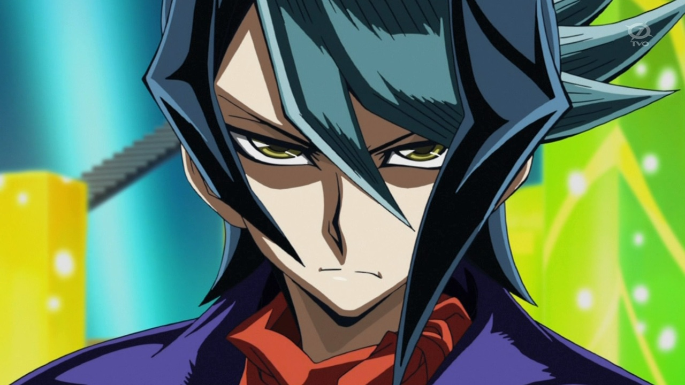
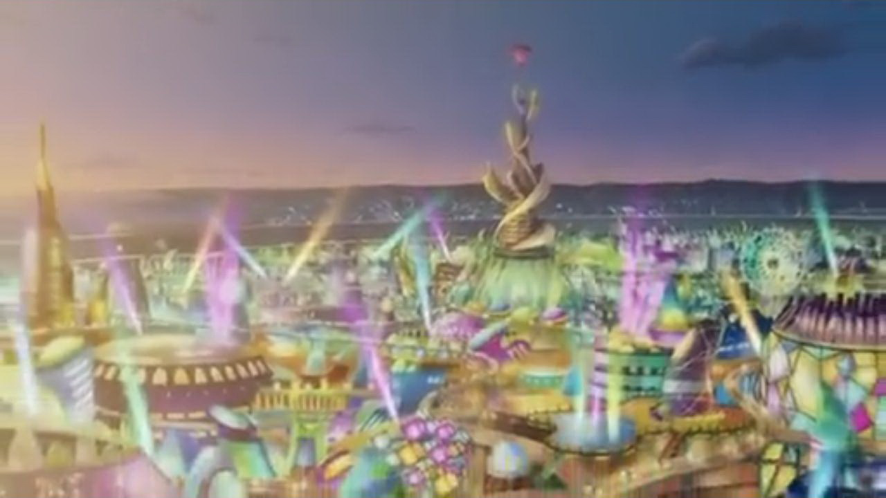
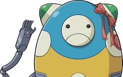
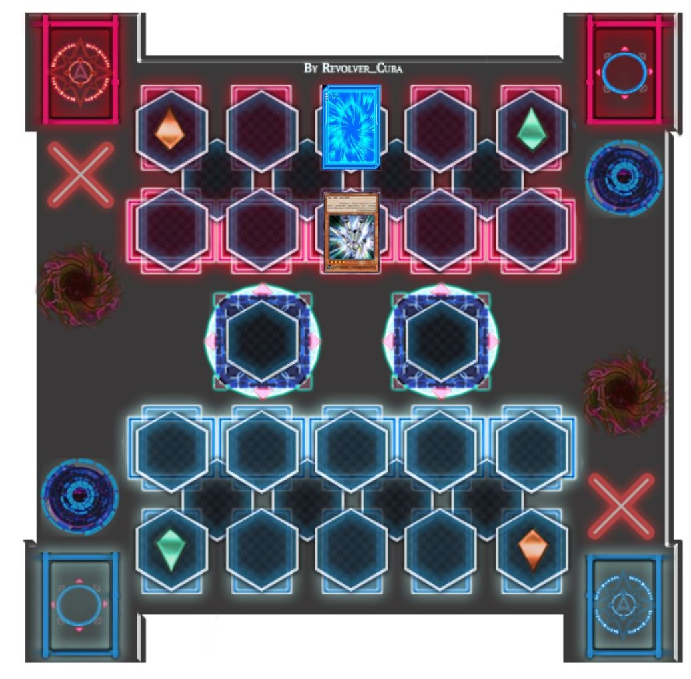
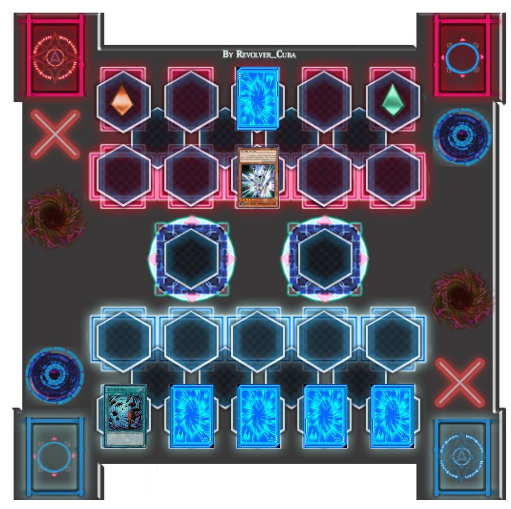
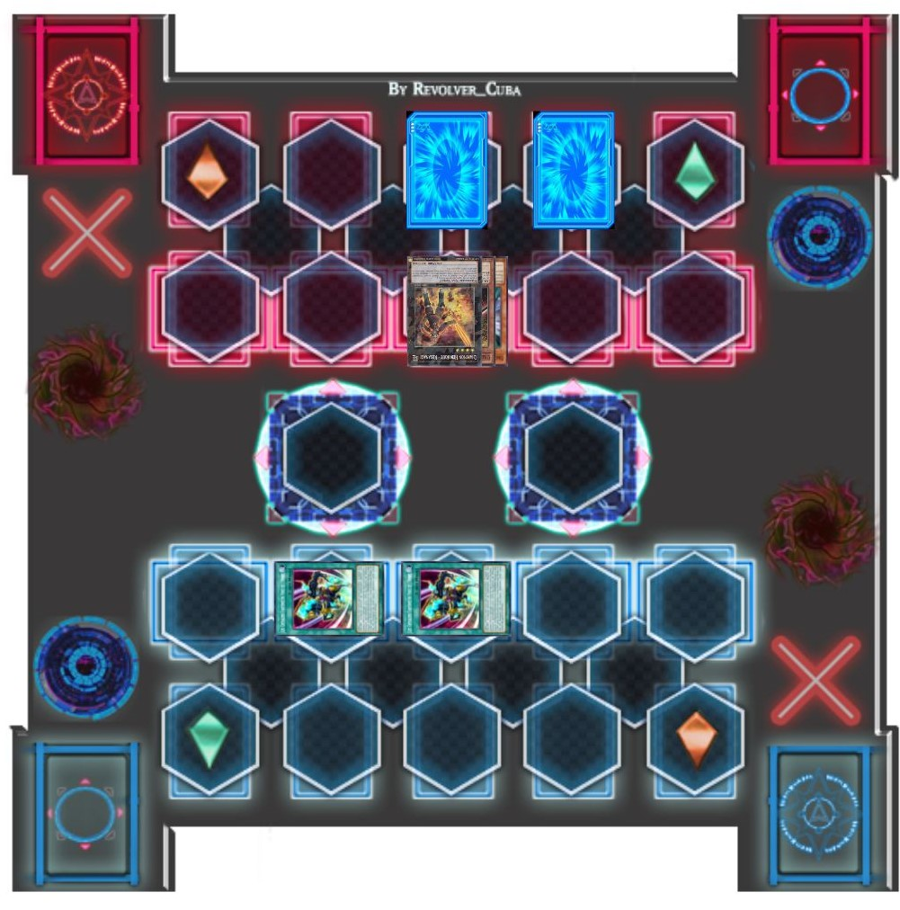

Ruri
 a demandé, curieux qu'un halo de lumière vert les entourait.
a demandé, curieux qu'un halo de lumière vert les entourait.
Ruri: Qu'est-ce que c'est ?
Ruri a demandé, curieux qu'un halo de lumière vert les entourait.
Yuma : C'est comme cela que nous allons monter à bord. Nous sommes prêts,
Astral
: C'est comme cela que nous allons monter à bord. Nous sommes prêts,
Astral ! Téléporte-nous !
! Téléporte-nous !
Yuto et Ruri: Qui est Astral ?
Ruri et Yuto ont tous deux posé la question. Yuma leur souria.
ont tous deux posé la question. Yuma leur souria.
Yuma: Vous allez voir.
Il a dit alors que la lumière autour d'eux est devenue rouge juste avant de les prendre.

L'instant d'après, Yuto et Ruri se sont retrouvés dans une énorme salle de haute technologie, qui ressemblait au pont d’un vaisseau spatial.
Ruri: Incroyable.
S'exclama cette dernière.
Yuto: Où... sommes-nous ?
Demanda Yuto avec étonnement.
Astral: Toi et Ruri êtes à bord de l'Ijigen Hikosen .
.
Le couple s'est retourné pour voir un être luminescent bleu clair, flotté sur le panneau de contrôle central. Sa vue les a presque effrayés.
Yuto: Qui ou qu'est ce que tu est ?
Yuto cria, se plaçant instantanément devant Ruri pour la protéger.
Astral: Mon nom est Astral. Inutile de s'alarmer, Yuto. Je suis un ami de Yuma et je n'ai aucune intention de faire du mal à l'un d'entre vous.
Astral répondit à Yuto et à Ruri, d'une voix calme.
Ruri: Astral ? La même personne à qui tu as parlé juste avant que nous venions ici ?
Ruri demanda à Yuma, plus curieuse qu'effrayé par lui. Le garçon hocha la tête.
Yuma: Oui, c'est bien lui. Je lui ai aussi parlé avant quand on courait, mais tu ne pouvais pas le voir jusqu'à maintenant. Il peut être un peu froid parfois, mais
c'est vraiment un bon gars.
Yuma a répondu de manière rassurante.
Astral: Maintenant que nous nous sommes rencontrés, je vous suggère fortement de prendre place. Nous sommes sur le point de partir.
Astral a conseillé alors qu'il se concentrait maintenant sur les panneaux de contrôles, faisant bouger le vaisseau à nouveau. Immédiatement, le trio a trouvé les sièges les plus proches.
Yuma: Nous sommes prêts.
Répondit Yuma.
Astral: Bien. Accrochez-vous !
Disait Astral, éloignant maintenant le vaisseau de Heartland.
Yuto et Ruri s'accrochèrent à leurs sièges, alors qu'ils sentaient l'énorme vaisseau en mouvement. Ils ont alors remarqué l'écran situé devant le pont. Ils ont vu leur maison en ruine s'éloigner de leurs vues tandis qu'une lumière brillante se formait au centre de l'écran. Le vaisseau a vibré alors qu'ils accéléraient. Les secondes ressemblaient à des heures car la lumière devenait de plus en plus forte et le vaisseau continuait de trembler. Yuto a pris la main de Ruri et l'a serré fort, tandis que Ruri a maintenu sa prise sur la main de Yuto.
La prochaine chose qu'ils ont vu, leur maison a disparu de l'écran et a été remplacée par une vue de couleurs tourbillonnantes.
Ruri: Où sommes-nous maintenant ?
Demanda Ruri après que les vibrations se soient arrêtées.
Astral: Nous avons quitté la dimension Xyz, ainsi que le monde dont elle faisait partie. D'après mes calculs, nous atteindrons notre destination dans moins de trente
minutes.
Révéla Astral. Cette annonce a stupéfié le duo.
Yuto: Comment ça nous avons quitté notre monde ? Où allons-nous exactement ?
Demanda Yuto en se levant à nouveau, voulant des réponses. Astral se retourna pour faire face aux nouveaux occupants du vaisseau pour répondre, mais Ruri commença la première.
Ruri: Yuto, j'ai posé la même question à Yuma tout à l'heure en courant vers la tour d'Heartland. Il m'a dit que c'était un endroit similaire à notre maison avant
qu'elle ne soit envahie, où Academia ne pourra jamais nous trouver.
Astral hocha la tête.
Astral: C'est exact. Pour être plus précis, nous nous dirigeons VERS Heartland en fait. Cependant...
Astral a ajouté en levant la main, voyant que Yuto et Ruri étaient sur le point de l'interrompre.
Astral: Je dois préciser que ce Heartland vers lequel nous nous dirigeons et celui que nous venons de quitter ont plus de différences que l'apparence des lieux
eux-mêmes. Il y a des gens là-bas qui n'ont jamais existé dans votre monde. Autre fait, vous pourriez y rencontrer une... "certaine" personne que vous reconnaîtrez
tous les deux, mais cette personne ne saura rien de vous. C'est parce que vous deux n'existez pas dans "notre" Heartland".
Expliqua Astral. Cette révélation stupéfia le couple.
Yuto: Tu est sérieux ?
Demanda Yuto, incrédule. Astral lui répondit par un nouveau signe de tête.
Ruri: Quand tu as dit "notre" Heartland, tu veux dire... ?
Ruri a demandé en se tournant vers Yuma, qui a également hoché la tête.
Yuma: Oui. Le Heartland où nous allons est ma maison. Le monde où se trouve "ce" Heartland... se trouve être mon monde, à Astral et moi.
Yuto et Ruri continuaient d'être surpris par ces nouveaux détails.
Yuto: Comment peux-tu être si sûr que Academia ne nous trouvera pas là-bas ?
Demanda Yuto, encore fatigué.
Astral: Notre monde et le vôtre ne font pas partie du même univers. Une barrière maintient constamment nos univers séparés. En ce qui concerne
Akaba Leo , le monde dans lequel les Quatre Dimensions résident est, à sa connaissance, le seul qui existe. Même s'il prend conscience qu'il existe d'autres mondes et
univers que le sien, il n'a pas la capacité de nous suivre ou de voyager au-delà de cette barrière.
, le monde dans lequel les Quatre Dimensions résident est, à sa connaissance, le seul qui existe. Même s'il prend conscience qu'il existe d'autres mondes et
univers que le sien, il n'a pas la capacité de nous suivre ou de voyager au-delà de cette barrière.
Ruri: Alors comment vous 2, avez-vous pu le faire ?
Astral: Ce vaisseau a été récemment modifié avec la capacité de contourner les barrière, et d'atteindre votre univers et votre monde. C'est un exploit assez remarquable je dois dire.
Astral a commenté, toujours impressionné par ce fait. Yuto et Ruri sont restés silencieux, se noyant face à cette nouvelle information.
Ils allaient en fait se rendre dans un Heartland qui serait à la fois similaire et différent du leurs. Quelles que soient les différences, Ruri espérait qu'elle et Yuto pourraient s'y adapter jusqu'à ce que le moment soit venu de retourner dans leur propre monde. Après un moment, une autre question vint à l'esprit de Yuto.
Yuto: Astral, d'où viens-tu exactement dans ton monde ?
Astral: Je suis originaire de l'
Astral World . Un endroit hors de la Terre où se trouve Heartland. Les humains pourraient appeler cet endroit le "Paradis", où les âmes pures voyagent quand elles meurent.
. Un endroit hors de la Terre où se trouve Heartland. Les humains pourraient appeler cet endroit le "Paradis", où les âmes pures voyagent quand elles meurent.
Yuto: Alors... il existe un endroit comme "l'enfer" ?
Il demanda, commençant à se sentir déconcerté. Astral acquiesça une fois de plus.
Astral: En effet, ou plutôt il y en avait un autrefois. L'endroit auquel tu fais référence était connu sous le nom de
Barian World . A l'origine, ces deux mondes ne faisaient qu'un avant d'être séparés. Pendant des milliers d'années, ils étaient constamment en guerre, essayant de se détruire
mutuellement. Mais grâce au travail combiné de Yuma, de moi-même et de nos amis, cette guerre a finalement cessé et les deux mondes sont redevenus unis.
. A l'origine, ces deux mondes ne faisaient qu'un avant d'être séparés. Pendant des milliers d'années, ils étaient constamment en guerre, essayant de se détruire
mutuellement. Mais grâce au travail combiné de Yuma, de moi-même et de nos amis, cette guerre a finalement cessé et les deux mondes sont redevenus unis.
Yuto: Comment ?
Astral: Il existe une carte assez puissante pour altérer la réalité elle-même, appelée le
Numeron Code . C'est par le pouvoir de cette carte que l'Astral World et le Barian World ont été réunis.
. C'est par le pouvoir de cette carte que l'Astral World et le Barian World ont été réunis.
Yuto:Une carte qui peut changer la réalité même !? C'est incroyable !
S'exclama Yuto. Il s'est ensuite tourné vers Ruri, qui n'avait pas parlé depuis un moment maintenant.
Yuto: Ruri ? Qu'est-ce qui ne va pas ?
La jeune fille avait l'air vraiment troublée lorsqu'elle repris la parole.
Ruri: Je suis désolé Yuto. J'ai bien entendu tout ce qu'Astral a dit. C'est juste que...
Elle hésita une seconde.
Ruri: Je n'arrête pas de penser à mon frère, ou au type qu'il affrontait en duel quand on est partis.
Yuto: Yuri .
.
Il le disait, en prononçant le nom avec colère. Avec toute cette discussion sur les voyages dans d'autres mondes, il avait complètement oublié
Shun, et qu'il était la raison pour laquelle Yuto et Ruri
s'étaient enfuis avec Yuma.
Yuto: Ruri, je suis sûr que ton frère va bien. Shun est l'un des plus grands combattants de la Résistance. On ne devrait pas s'inquiéter pour lui.
Ruri ne se sentait pas si sûre d'elle quand elle a continué.
Ruri: Ce n'est pas seulement ça. Je suis toujours perturbée par le fait que Yuri... avait le même visage que toi.
Ruri a dit, la peur dans la voix maintenant. Yuma et Astral se sont regardés d'un air inquiet, mais Yuto et Ruri n'ont pas remarqué. Yuto a ensuite eu l'air déstabilisé.
Yuto: Oui, je n'arrive toujours pas à y croire. Comment quelqu'un de la dimension de la Fusion peut-il me ressembler à ce point ? Comment c'est possible ?
Il s'est demandé.
Yuto: En fait, on ne sait même pas encore pourquoi Academia en a après toi
Yuto l'a fait remarquer, ce qui a fait que Ruri a enroulé ses bras autour d'elle, l'air effrayé. Yuto s'est ensuite tourné vers Yuma et Astral.
Yuto: Vous connaissez tous les deux la vérité, n'est-ce pas ? Pourquoi Yuri me ressemble-t-il ? Et pourquoi le Professeur d' Académie veut-il Ruri ? Dites-le nous !
Yuma et Astral se regardèrent à nouveau avant que ce dernier ne réponde.
Astral: Toutes ces questions possèdent une longue histoire pour accompagner les réponses. Vous allez devoir attendre pour tout apprendre, mais nous pouvons vous
donner une idée de base maintenant. Yuto...
Astral s'est ensuite adressé à Yuto uniquement.
Astral: La raison pour laquelle toi et Yuri partagez une forte ressemblance est que vous avez tous les deux une connexion unique dont aucun de vous n'est encore
conscient... une connexion qui possède aussi une histoire... plutôt sombre.
Cela secoua Yuto.
Yuto: Une histoire... sombre ?
Il a dit d'une voix hésitante. Il ne pouvait pas imaginer ce que cela signifiait, mais il n'aimait pas le ton de cette nouvelle. Ruri aussi s'inquiétait de ce que
cela signifiait pour Yuto. Yuma a alors répondu à la question concernant Ruri elle-même.
Yuma: Ruri, Akaba Leo veut te capturer car il a besoin de toi pour un plan visant à ramener quelqu'un qu'il a perdu il y a longtemps. Le fait est, cependant... que ce plan te tuerait certainement. C'est pourquoi j'ai dû te sauver.
Ruri a pâli après cette brève explication, et Yuto l'a regardée avec plus d'inquiétude qu'il n'en avait jamais montré. Elle se mit alors à trembler de peur, ses bras toujours enroulés autour d'elle.
Ruri: C'est pour ça... que je suis une cible ?
Elle a ensuite regardé Yuto avec de yeux grands ouvert et effrayés.
Ruri: Yuto, pourquoi tout cela nous arrive-t-il ? C'est comme si un mauvais rêve était devenu réalité. Et le pire dans tout ça... c'est que la personne que le Professeur d'Academia a envoyée pour me capturer... était quelqu'un qui te ressemblait.
Yuto a alors serré Ruri dans ses bras, qui l'a serra en retour instantanément. Sa chaleur a fini par l'aider à se calmer. Elle se sentait toujours mieux quand Yuto était aussi proche d'elle, l'aidant à sentir que tout irait bien.
Yuto: Ruri, je ne suis pas lui. Je suis moi. Rien ne pourra jamais changer ça. Tu n'as pas à avoir peur de moi.
Disait Yuto d'un ton rassurant. Ruri a levé les yeux vers lui avec un sourire reconnaissant et affectueux.
Ruri: Je n'ai pas peur, Yuto. Je ne pourrais jamais avoir peur de l'homme que j'aime.
Yuto sursauta avec de grands yeux.
Yuto: Qu'est-ce que tu... viens de dire ?
Il a demandé sous le choc, commençant maintenant à rougir. Ruri a alors rapproché son visage de celui de Yuto.
Ruri: J'ai dit... que je t'aime, Yuto.
Elle chuchota avant de presser ses lèvres sur celles de Yuto. Rien, pas même d'apprendre qu'il y avait une autre personne qui partageait son visage, ne l'avait plus surpris que cela. Il n'avait jamais imaginé qu'il embrasserait la petite sœur de son meilleur ami. Il est vrai que Yuto avait développé de forts sentiments pour Ruri, mais il se sentait toujours trop peureux pour faire le moindre geste. Il craignait que le frère surprotecteur de Ruri ne le tue dans son sommeil s'il le faisait. Pour l'instant, Yuto ne se souciait pas de ce que Shun lui ferait, il ferma les yeux et rendit le baiser.
Yuma s'est immédiatement retourné, se sentant gêné par la scène. Il a alors remarqué qu'Astral ne faisait pas de même. Il semblait juste légèrement curieux de la dernière action du nouveau couple.
Yuma: Astral, retourne-toi ! Ne les regarde pas pendant qu'ils font ça !
Il chuchota précipitamment.
Astral: Pourquoi est-ce que je me retournerais ? Je ne vois pas de problème.
Astral répondit avec indifférence. Yuma gémissait.
Yuma: Astral, les gens n'aiment pas qu'on les regarde quand ils s'embrassent ! C'est une invasion de leurs vie privée !
Astral s'est contenté d'incliner la tête.
Astral: Une invasion de leurs vie privée ?
Yuma: Euh, oui ! Sur Terre, quand un garçon et une fille s'embrassent, ils préfèrent être seuls, sans témoins ! Sinon, ce serait vraiment gênant et humiliant !
Expliqua ce dernier.
Astral: Si c'est le cas, alors comment se fait-il que Yuto et Ruri s'embrassent devant nous ? Pourquoi n'ont-ils pas cherché à s'isoler avant ?
Yuma gémit à nouveau, sachant qu'Astral l'a eu.
Yuma: Ne me le demande pas !
Le garçon rétorqua avec colère. Astral a alors pris une expression amusée.
Yuma: Quoi ?
Astral: Tu n'as jamais embrassé une fille toi-même, n'est-ce pas Yuma ?
Yuma rougit à cette question.
Yuma: Mais qu'est-ce que ça a à voir avec tout ça !?
Yuma paniqua. Astral gloussa devant la réaction de son ami.
Astral: Peut-être que tu devrais en faire l'expérience toi-même, et peut-être qu'alors tu aurais la réponse.
La dernière réponse d'Astral donna presque envie à Yuma de l'étrangler... presque.
Yuma: Ne ne parle plus de ça !
Yuma s'est alors éloigné, en ayant assez des taquineries d'Astral. Tout au long de leur dispute, Yuto et Ruri n'ont jamais rompu leur baiser. Ils étaient trop absorbés par leur amour et leur passion pour remarquer ce qui les entourait. Après ce qui a semblé être une éternité, ils se sont finalement séparés. Les deux se sont souri.
Yuto: Je t'aime aussi, Ruri.
Yuto a dit doucement, en caressant le visage de sa nouvelle petite amie avec sa main. Ruri tenait sa main au-dessus de la sienne, appréciant le contact.
Yuto: Peu importe ce qui nous attend dans ce nouveau Heartland, nous l'affronterons ensemble.
Ruri a hoché la tête, tout à fait d'accord avec lui.
Ils ont alors finalement remarqué que Yuma n'était plus là.
Ruri: Où est Yuma ?
Ruri a demandé à Astral.
Astral: Il a senti qu'il avait besoin d'un peu... d'intimité.
Il a dit vaguement avec un petit sourire. Yuto et Ruri ont eu l'air confus, ne sachant pas ce qu'il voulait dire. Avant que l'un d'entre eux ne puisse demander des précisions, ils ont entendu un bip sonore.
Yuto: Qu'est-ce que c'est ?
Astral: Ce son signifie que nous sommes arrivés.
Une fois de plus, le grand écran en face avait changé. Cette fois, il révélait une vue que Yuto et Ruri n'avaient pas vu depuis longtemps. Un spectacle qui les a laissés bouleversés.
Astral: Bienvenue... à Heartland.
???: Bonjour, jeunes freluquets, qui a faim ?
Demanda une gentille petite vieille femme, alors que tout le monde descendait pour le petit déjeuner. Yuma, Yuto, Ruri et une jeune femme aux longs cheveux roux foncés se sont assis à une grande table tandis que la vieille femme distribuait des crêpes et du bacon.

Après leur retour de voyage, Yuma a invité Yuto et Ruri à passer la nuit chez lui et à discuter d'un logement temporaire le lendemain, après leur avoir fait visiter
son Heartland. Le couple a d'abord refusé, ne voulant pas être un fardeau pour lui, mais Yuma n'a pas accepté le non comme réponse. Ils ont finalement accepté et sont
allés chez lui, où il leur a présenté sa grande sœur,
Akari , et sa grand-mère,
Haru
, et sa grand-mère,
Haru .
.
Yuma a dit à sa famille que Yuto et Ruri étaient des visiteurs venus de l'extérieur de la ville et qu'ils n'avaient nulle part où aller. Akari n'aimait pas l'idée de faire venir de parfaits inconnus pour passer la nuit, mais Haru semblait beaucoup plus raisonnable. Akari a finalement cédé et a permis à Ruri de rester dans sa chambre et à Yuto dans celle de Yuma, tandis qu'elle et Yuma dormaient dans la chambre de leurs parents. Ils ont tous eu une étonnante bonne nuit de sommeil et se sont réveillés avec l'odeur de la nourriture chaude qui cuisait en bas le lendemain matin.
Yuma: Merci Baa-chan ! Tout a l'air si bon !
(trad: Baa-chan = Grand-mère)
Disait Yuma avec excitation, sa bouche étant pratiquement baveuse. Akari grogna et lui a donné une claque derrière la tête.
Akari: Yuma, fais preuve de bonnes manières ! Nous avons des invités ici, pour l'amour du ciel !
Cette dernière cria en s'énervant.
Ruri: Ce n'est rien, Akari-san. Ça sent vraiment bon.
Ruri disait en sentant l'arôme délicieux de la nourriture.
Ruri: Merci, Mme Tsukumo.
Yuto: Oui, c'est vrai. En fait, ça fait longtemps qu'on n'a pas mangé de la nourriture comme ça. Merci.
Yuto a ajouté, l'air reconnaissant. La vieille femme gloussa.
Haru: Appelez-moi Haru, mes chers. Et vous êtes les bienvenus. Mangez !
Elle encouragea tout le groupe à manger.
Akari: Alors vous deux, parlez-nous de vous. D'où venez-vous exactement ?
Akari a demandé d'une manière professionnelle. Yuto et Ruri se sont regardés l'un l'autre, l'air anxieux. Yuma les avait prévenus hier soir que sa grande sœur était journaliste, ce qui signifiait qu'elle poserait certainement des questions qui devaient les mettre mal à l'aise.
Ruri: Eh bien, hum... c'est en quelque sorte... difficile à expliquer.
Ruri le disait avec un sourire nerveux, prenant une bouchée d'une crêpe imbibée de sirop.
Akari: Comment ça ?
Akari a demandé, en levant un sourcil.
Yuto: Notre maison... est un peu un... sujet délicat. Nous préférons ne pas en parler.
Yuto répondit, transpirant un peu, tout en croquant une tranche de bacon. Cela a vraiment stimulé la nature investigatrice d'Akari.
Akari: Ok, maintenant il faut que je sache. Qu'est-ce que vous cachez tous les deux ?
Akari a poursuivi son interrogatoire.
Yuma: C'est bon Nee-chan (trad: Nee-chan = Grande Soeur) ! Laisse-les tranquilles !
Disait Yuma, essayant de les protéger.
Akari: C'est une question parfaitement raisonnable, de plus nous ne savons rien de ces deux-là
Elle répondit à son frère avant de se recentrer à nouveau sur le jeune couple.
Akari: Qu'est-ce qui pourrait être si mauvais chez vous pour que vous ne voulez pas en discuter ?
Ruri a alors détourné le regard, ayant une mine triste. Yuto a senti qu'il n'avait pas d'autre choix que de dire quelque chose.
Yuto: Si je vous le dis, vous voulez bien laisser tomber le sujet ?
Yuto lui disait d'une voix si sérieuse qu'Akari a semblé un peu décontenancée. Néanmoins, elle hocha la tête en signe d'accord.
Akari: Tu as ma parole de journaliste. Maintenant, crache le morceau.
Yuto a fermé les yeux et a légèrement incliné la tête.
Yuto: L'endroit d'où nous venons... était un enfer. Des gens d'une nation lointaine nous ont attaqués sans avertissement. Ils ont détruit nos maisons et pris la vie de nombreux innocents. Ceux d'entre nous qui ont survécu ont dû apprendre à se battre pour rester en vie tous les jours depuis. Puis, la nuit où nous avons fui, un agent ennemi a essayé de s'emparer de Ruri, mais son frère aîné Shun l'a repoussé assez longtemps pour que nous puissions nous échapper. Peu de temps après, nous avons rencontré Yuma, qui a eu la gentillesse de nous amener ici, à Heartland, jusqu'à ce que nous sachions quoi faire.
Yuto expliqua en rouvrant les yeux, l'air triste. Bien qu'il ait techniquement dit la vérité, il a pris soin d'omettre certains détails qui inviteraient plus de questions non désirées.
Akari et Haru semblaient horrifiés par l'histoire de Yuto, et ils pouvaient voir que Ruri était sur le point de pleurer. La grande sœur de Yuma a immédiatement regretté son interrogatoire.
Akari: Je... n'avais aucune idée. Je suis vraiment désolée, surtout pour toi Ruri.
Akari a dit avec tristesse. Elle pouvait comprendre la position de ce Shun. Elle ferait aussi n'importe quoi pour protéger Yuma, même en mettant sa propre vie en danger. Akari s'est demandé si le frère de Ruri allait bien, mais a refusé de le demander. Ruri a alors secoué la tête.
Ruri: Non, c'est bon. Tu ne pouvais pas savoir.
Elle a dit, à peine au-dessus d'un murmure. Après cela, tout le monde a mangé en silence. Se sentant immensément coupable, surtout après avoir reçu un regard plein de colère de son jeune frère, Akari soupira et décida de se faire pardonner.
Akari: Je vais vous dire. Aujourd'hui, c'est mon jour de congé, alors laissez-moi vous emmener acheter des vêtements. D'après ce que je vois Ruri, toi et ton petit ami avez besoin d'un sérieux changement de garde-robe.
Elle a suggéré, en désignant les vêtements déchirés et en lambeaux qu'ils portaient actuellement.
Ruri: J'aime cette idée. Ça a l'air bien.
Ruri a répondu, semblant plus joyeuse.
Yuto: Moi aussi.
Yuto a ajouté, en approuvant l'idée. Après avoir réglé cette question, Akari a emmené les jeunes adolescents en ville une fois le petit déjeuner terminé.
Haru: Passez une bonne journée, les jeunes !
Haru a dit en leur faisant signe de partir. A côté d'elle, un petit robot leur a également salué.
Obomi: Reviens-vite "Déchet".
Disaitt le robot, ce qui avait apparemment énervé Yuma.
Yuma: Arrête de m'appeler comme ça, Obomi ! Je ne suis pas un déchet ! Bon sang !
Yuma cria en colère. Akari, elle, riait, tandis que Yuto et Ruri étaient clairement confus.
Yuto: Qu'est-ce qui s'est passé ?
Yuto demanda.
Akari: Oh, Obomi a cette habitude d'appeler Yuma par n'importe quelle objet en lien avec les ordures. C'est plutôt hilarant.
Akari a dit, toujours en souriant.
Yuma: Pas pour moi, ça ne l'est pas !
Fulmina Yuma.

Le temps que Yuma se calme, le groupe avait atteint un centre commercial près de la place de la ville. En regardant autour d'eux, Yuto et Ruri étaient stupéfaits de
voir à quel point ce Heartland était pratiquement identique à celui d'où ils venaient (le Heartland de leurs vieux jours, bien sûr). Le couple s'est arrêté devant
l'entrée du centre commercial pour contempler la Tour d'Heartland ,
se rappelant comment était leur propre version juste avant qu'elle ne soit
,
se rappelant comment était leur propre version juste avant qu'elle ne soit
detruite par l'invasion. Ils espéraient qu'un jour, leur maison pourrait être restaurée.
par l'invasion. Ils espéraient qu'un jour, leur maison pourrait être restaurée.
Yuma: Vous allez bien ?
Demanda Yuma. Yuto et Ruri lui ont fait un signe de tête.
Yuto: Oui, on va bien, Yuma.
Répondit Yuto.
Ils ont ensuite suivi Akari à l'intérieur. Une fois qu'ils ont atteint un magasin de vêtements, Akari a permis à Yuto et Ruri de choisir leurs nouveaux vêtements. A leur grande joie, ils ont trouvé des vêtements qu'ils portaient avant l'invasion. Après lui avoir montré leurs choix, Akari les a emmenés dans des cabines d'essayage séparées pour les essayer. Yuma attendait à l'extérieur de la cabine d'essayage des hommes, tandis qu'Akari était dans celle des femmes.
Akari: Comment ça va là-dedans, Ruri ? Est-ce que tout va bien ?
Akari a demandé après une minute d'attente.
Ruri: Oui, tout me va comme un gant. Comme si je venait de les porter hier encore.
Ruri a répondu de l'intérieur. Elle est alors sortie dans sa nouvelle tenue. Elle portait maintenant une simple robe jaune et blanche, longue jusqu'au genou, avec des chaussures blanches.

Akari: Eh bien, n'es-tu pas mignonne maintenant ?
Akari a commenté, suscitant un petit rire de la part de Ruri.
Ruri: Je te remercie. En fait, je portais quelque chose comme ça quand j'ai rencontré Yuto pour la première fois.
Akari: C'était le coup de foudre ?
Akari l'a taquiné, faisant rougir la jeune adolescente.
Ruri: On peut dire ça.
Akari: Alors, comment vous êtes-vous rencontrés, Yuto et toi, au fait ?
Akari a demandé. À ce moment-là, Ruri baissa les yeux, l'air triste à nouveau.
Akari: Attends, si tu ne veux pas me le dire, c'est très bien ! Pas besoin de refaire le visage triste !
Akari paniqua, mais Ruri l'a arrêtée en secouant la tête.
Ruri: Non non, c'est bon. Mon frère nous a présenté.
Elle le disait, en regardant toujours ailleurs. Akari sursauta et détourna aussi le regard. Elle ne voulait pas forcer Ruri à parler de son frère alors qu'elle ne savait même pas s'il était vivant ou non. Cependant....
Ruri: Veux-tu en entendre plus sur lui ?
Ruri a demandé timidement, surprenant la jeune femme.
Akari: Eh bien, seulement si tu le veux.
Akari a dit, voulant paraître juste. Ruri leva alors les yeux vers elle.
Ruri: En fait, je le veux bien. Shun a à peu près ton âge, il est grand et a toujours un air sérieux. Il n'avait peur de rien et n'hésitait jamais à combattre ceux
qui nous poursuivaient. Il a toujours veillé sur moi, avant et après que nous ayons tout perdu.
Ruri a répondu, se souvenant de tous les bonnes côtés à son sujet.
Akari: Ton frère semble être un homme bien.
Akari a dit avec un sourire chaleureux. Ruri hocha la tête.
Ruri: Il l'est. En fait, j'ai une photo de nous du bon vieux temps.
Ruri a dit en fouillant dans les poches de ses vieux vêtements et a sorti une photo légèrement déchirée et fanée d'elle, de Yuto, et d'un grand jeune homme aux cheveux noirs bleutés et aux yeux jaune-vert. D'après son apparence, la photo a dû être prise avant que la maison de Yuto et Ruri ne soit envahie.

Akari trouvait que Shun était plutôt beau gosse, mais elle ne l'aurait jamais dit devant Ruri.
Akari: C'est un bel homme.
Elle a fini par le dire.
Ruri: Je pense que vous vous entendriez bien tous les deux.
Ruri disait, alors que les filles se souriaient l'une à l'autre.
Pendant ce temps, du côté des hommes, Yuto vient de sortir avec sa nouvelle tenue. Il porte désormais un T-shirt noir sous une veste noire et crème, et un petit pendentif autour du cou, ainsi que des chaussures noires.

Yuto: Qu'est-ce que tu en penses ?
Yuma: Je penses que ça te va comme un gant.
Yuma lui répondit avec un pouce en l'air, que Yuto lui a retourné avec plaisir.
???: On peut savoir ce que tu fiches ici ?
Yuma et Yuto se sont retournés derrière eux pour voir quelques personnes s'approcher. Celui qui venait de parler était un garçon qui semblait un peu plus âgé que Yuma avec des yeux bleus et des cheveux violets qui remontaient aux extrémités. Il avait l'air de vouloir être n'importe où sauf ici. Avec lui se trouvaient deux filles portant des sacs à provisions. L'une d'entre elles avait des cheveux verts courts et ondulés et des yeux noisette orange, tandis que l'autre avait des yeux rose foncé, de longs cheveux bleus et une frange bleu clair sur le devant.
Oh, salut
Shark ! Kotori
! Kotori ! Et la soeur de Shark
! Et la soeur de Shark !
!
Cette dernière semblait ennuyée.
"Soeur de Shark": Allez Yuma ! On se connaît depuis un moment maintenant ! Pourquoi est-ce si difficile pour toi de m'appeler par mon nom ?
Elle a demandé. Yuma tressaillit.
Yuma: Je ne sais pas. C'est juste la façon dont je te connais, je pense.
Disait Yuma, toujours souriant. La fille soupira en réponse.
Yuma: De toute façon, pourquoi êtes-vous tous ici ?
Ce dernier demanda. L'autre garçon, appelé Shark, grogna.
Shark: Je t'ai demandé en premier. Mais si tu veux savoir, ces deux-là ont insisté pour renouveller leur garde-robe pour je ne sais quoi. Malheureusement, je suis
obligé de les escorter.
Il dit en montrant derrière lui avec son pouce.
Kotori: Nous te l'avons dit ! C'est pour le voyage en camping demain, donc nous avons besoin d'une tenue de plein air.
Kotori, la fille aux cheveux verts, répondit d'une voix agacée.
Shark: Comme si je me souciais de ça.
Disait Shark, détestant clairement faire du shopping pour des vêtements.
Yuto: Qu'y a t-il de si mal à faire du camping ?
Demanda Yuto, attirant enfin l'attention de l'autre.
Kotori: Qui est-tu ?
Kotori demanda. Yuma se plaça alors à ses côtés pour le présenter aux nouveaux arrivants.
Yuma: Les amis, voici Yuto. Il est nouveau en ville. Ma soeur et moi sommes venus ici pour lui trouver de nouveaux vêtements aussi. Yuto, voici mes amis :
Kotori, Shark, et sa petite soeur.
La fille aux cheveux bleus soupira à nouveau en se tournant vers Yuto.
Rio: Mon nom est
Rio Kamishiro
. Ryoga
ici présent est mon frère jumeau.
Rio s'est présentée, en inclinant la tête vers Shark.
Shark: Salut.
Shark disait d'une manière indifférent.
Kotori: Salut Yuto. Bienvenue à Heartland.
Kotori l'a gentiment salué.
Yuto: Merci. C'est un plaisir de tous vous rencontrer. Mais Yuma t'a appelé Shark, non ?
Shark: Shark est juste un surnom. Ça ne me dérange pas que tu m'appelles comme ça
Kotori: Yuma, on ne t'a pas vu ces derniers temps. Tout va bien ?
Demanda Kotori. Yuma a juste gloussé.
Yuma: Oh, tu me connais ! Je suis toujours au milieu de quelque chose.
Shark: C'est ce que je craignais.
Murmura Shark.
Akari: Hey Yuto ! Regarde ta copine !
Yuto et la bande ont regardé pour voir Akari et Ruri s'approcher d'eux. Yuto a immédiatement rougi à la vue de Ruri. C'était comme la revoir pour la première fois.
Ruri: De quoi ai-je l'air, Yuto ?
Demanda Ruri. Yuto s'est approché d'elle et a souri.
Yuto: Comme un rêve devenu réalité.
Il le disait chaleureusement, la faisant rougir.
Ruri: Pareil pour toi.
Elle a répondu. Shark s'étouffa.
Shark: Je suppose que c'est ta petite amie ?
Il a demandé, attirant l'attention de Ruri.
Ruri: Ce sont des amis à toi ?
Elle demanda.
Yuto: En fait, ce sont des amis de Yuma.
Yuto corrigea, tout en la présentant.
Yuto: Tout le monde, voici ma petite amie, Ruri Kurosaki. Ruri, voici Ryoga, sa soeur Rio, et Kotori.
Ruri: Bonjour tout le monde.
Ruri disait poliment en s'inclinant. Après que toutes les présentations aient été faites, Akari a demandé à Yuto si ses nouveaux vêtements lui allaient bien. Elle était satisfaite que ce soit le cas.
Akari: Je suis heureuse de l'entendre. Si nous avons tous fini ici, mettons tes nouveaux vêtements dans des sacs et allons à la caisse.
Akari montra alors la voie.
Après qu'ils aient tous quitté le magasin de vêtements, Yuto a demandé à Akari plus d'informations sur ce voyage de camping dont Kotori a parlé.
Akari: Oh, c'est devenu une sorte de truc de groupe. Si tu veux, toi et Ruri pouvez venir avec nous. Je pense que vous aimeriez tous les deux.
Elle a fortement suggéré. Yuto et Ruri se sont regardés et ont accepté. Après toute la douleur et le chaos qu'ils ont traversé dans leur Heartland, ce voyage en camping leur semblait être la meilleure idée.
Ruri: Bien sûr Akari, nous serions ravis de venir.
Ruri disait joyeusement.
Akari: Alors c'est réglé. Vous feriez mieux de vous coucher tôt ce soir, car nous partons à l'aube !
Akari annonca. Cela a fait gémir presque tout le monde.
Yuma: C'est la seule chose que je n'ai pas envie de faire dans ces voyages
Yuma grommela, faisant rire la plupart des autres. En traversant la ville, la bande a appris à connaître Yuto et Ruri et à les apprécier. Bien sûr, le couple n'a pas parlé de leurs origines et de ce qui s'est passé. Cela avait été assez douloureux pour Yuto de l'expliquer à la soeur et à la grand-mère de Yuma.
Lorsque Shark a posé une question à ce sujet, Akari lui a strictement dit de laisser tomber et de s'en tenir là. Bien que curieux, Kotori, Shark, et Rio respectivement n'ont pas posé plus de questions. Ils étaient près de la maison de Yuma quand ils sont tombés sur un couple de vieux amis de Yuma...
???: Hey Yuma !
Yuma et le groupe se sont arrêtés et se sont retournés pour voir un homme plus âgé aux cheveux roux flamboyants qui marchait vers eux. Il était suivi d'une femme aux cheveux noirs et à la frange violette qui avait à peu près le même âge que lui et qui semblait ennuyée. Yuto et Ruri se sont demandés qui ils étaient.
Yuma:
Gauche ! Qu'est-ce qui t'amène ici ?
! Qu'est-ce qui t'amène ici ?
Demanda Yuma, heureux de voir son ami/rival.
Gauche: En fait, j'étais en vacances et je me suis dit que j'allais passer pour avoir enfin l'occasion de régler nos vieux comptes. Et te voilà !
Gauche le disait avec enthousiasme.
???: Tu ne peux pas laisser tomber , n'est-ce pas ?
Disait la femme qui l'accompagne. Gauche fit la moue devant elle.
Gauche: Oh, détends-toi
Droite . Je peux me faire plaisir de temps en temps, pas vrai ?
. Je peux me faire plaisir de temps en temps, pas vrai ?
La femme, Droite, secoua la tête.
Yuto: Tu les connais Yuma ?
Demanda Yuto.
Yuma: Bien sûr que je les connais. Gauche est le champion de Duel Monsters à Spartan City, et Droite est son manager. En fait, nous nous connaissons depuis longtemps.
Gauche: Oh, je vois quelques nouveaux visages ici.
Gauche disait curieusement, voyant la paire Xyz pour la première fois.
Yuto: Nous ne sommes arrivés ici qu'hier. Je m'appelle Yuto.
Se présenta t-il poliment.
Ruri: Mon nom est Ruri. Yuto est mon petit ami.
Elle le disait avec un sourire chaleureux, faisant rougir Yuto.
Droite: Enchanté de vous rencontrer tous les deux.
Droite disait, voyant à quel point ils étaient mignons ensemble. Elle souhaitait qu'une certaine personne qu'elle connaissait la voit de la même façon que Yuto regarde
Ruri...
Gauche: Alors, que dirais-tu de cette revanche Yuma ?
Gauche demanda de nouveau. Yuma a alors eu une meilleure idée.
Yuma: Bien sûr... seulement si tu bats Yuto ici !
Yuma suggéra, en poussant Yuto légèrement en avant.
Yuma: Yuto est un grand duelliste là d'où il vient. Si tu arrives à le battre, alors nous pourrons faire la revanche.
Le jeune garçon suggéra. Cet acte a pris Yuto et Gauche par surprise, un peu plus pour le premier.
Yuto: Attends, Yuma ! Qu'est-ce que tu fais ?! Je ne suis pas d'accord avec ça !
Ce dernier exigea. Yuma riait.
Gauche inclina la tête un peu curieusement.
Gauche: Donc tu es un Duelliste aussi, Yuto ? Tu dois être bon si Yuma pense que tu peux être un défi pour moi ! Ça ne me dérange pas d'affronter des petits nouveaux
comme toi ! Je serais heureux d'accepter si tu le fais !
Gauche répondit, en ayant l'air enflammé.
Droite: Oh super, il n'y a plus moyen de l'arrêter maintenant.
Droite se disait à elle-même.
Yuto: Yuma, pourquoi fais-tu cela !?
Yuto insista.
Yuma: Allez, Yuto ! C'est quand la dernière fois que tu as fait un duel pour t'amuser ? Je pense que ça te ferait du bien !
Répondit Yuma avec un sourire éclatant.
Yuto: Faire un duel... pour s'amuser ?
Se demanda le duelliste un peu plus âgé.
Ruri: Je suis d'accord avec Yuma. Cela fait longtemps qu'aucun de nous n'a fait de duel pour le plaisir. S'il te plait Yuto.
Ruri a insisté.
Yuto a réfléchi un moment, et a réalisé que Ruri et Yuma avaient raison. Tous ses récents duels n'avaient pas pour but de se divertir, mais de survivre dans une ville déchirée par la guerre. Il a regardé les autres et ils semblaient aussi d'accord.
Kotori: Vas-y Yuto.
Kotori l'a encouragé.
Rio: Montre-nous ce que tu as dans le ventre.
Rio continua.
Shark: Tu seras un lâche si tu refuses.
Shark le prévenait.
Akari: Je ne vois vraiment pas pourquoi tu ne devrais pas.
Akari lui répondit. A la surprise de Yuto, Astral réapparut à côté de Yuma et hocha la tête.
Après un moment de contemplation, Yuto hocha la tête lui aussi. Il a finalement accepté en se retournant vers Gauche.
Yuto: D'accord, Gauche. J'accepte.
Gauche fit un grand sourire.
Gauche: Super ! Faisons le Yuto !
Il le dit. Non seulement il a enfilé et activé son Duel Disk, mais il a également fait apparaître un tatouage rouge autour de son œil gauche. Sachant à quoi s'attendre, Yuto a placé un petit dispositif sur son œil gauche avant d'enfiler et d'activer son Duel Disk.
Gauche et Yuto: Duel Disk, Set ! D-Gazer, Set !
Les 2 duellistes déclarèrent en même temps.
Avant d'arriver la nuit précédente, Yuma a expliqué à Yuto et Ruri les
D Gazers , les Duels en réalité
augmentée, ainsi que leur fonctionnement. Astral a ensuite utilisé les systèmes du vaisseau pour modifier les
Duel Disks
, les Duels en réalité
augmentée, ainsi que leur fonctionnement. Astral a ensuite utilisé les systèmes du vaisseau pour modifier les
Duel Disks des Xyz
(intégrants des fonctions de D-Pads) afin qu'ils ne soient pas différents de ceux du nouveau Heartland, et leur a donné à chacun leur propre D-Gazer. Celle de Yuto
était noire avec une lentille de couleur violette. Yuma et les autres ont ensuite porté leurs propres D-Gazers (sauf Astral, qui n'en avait pas besoin) pour regarder
l'action. Celle de Ruri était d'un violet plus vif avec une lentille jaune.
des Xyz
(intégrants des fonctions de D-Pads) afin qu'ils ne soient pas différents de ceux du nouveau Heartland, et leur a donné à chacun leur propre D-Gazer. Celle de Yuto
était noire avec une lentille de couleur violette. Yuma et les autres ont ensuite porté leurs propres D-Gazers (sauf Astral, qui n'en avait pas besoin) pour regarder
l'action. Celle de Ruri était d'un violet plus vif avec une lentille jaune.
Voix d'ordinateur: AR Vision, Lien Etabli.
Disait une voix d'ordinateur sortit depuis les disques de duel des combattants, alors qu'un nouvel environnement virtuel apparaît autour d'eux. Yuto et Ruri ont été
impressionnés par la technologie VR dans ce monde.
Gauche: Je vais commencer. A mon tour ! Draw !
Turn 1: (Yuto: 4000 LP / Main: 5)(Gauche: 4000 LP / Main: 6)
Gauche regarda sa main et décida de voir ce que son nouvel adversaire allait tenter. Yuto avait également été informé que, contrairement à son monde, le duelliste qui commence en premier pouvait piocher. Par conséquent, cela ne l'a pas surpris.
Gauche: Tout d'abord, j'invoque
“Heroic Challenger Double Lance ”
!
Un soldat en armure blanche maniant deux lances s'oppose maintenant à Yuto.
Gauche: Je pose 1 carte face cachée et je termine mon tour. Maintenant, montre-moi tes compétences, Yuto !
Yuto acquiesca.
Yuto: Je le ferai. C'est mon tour. Draw !
Turn 2: (Yuto: 4000 LP / Main: 6)(Gauche: 4000 LP / Main: 4)
Yuto: Il me teste. Je devrais me préparer à une potentielle attaque.
Pensa ce dernier.
Je pose 4 cartes face cachées, puis je joue “Oarashi ” ! Cela détruit toutes les cartes Magies et Pièges sur le terrain !
Tout le monde regarda avec surprise Yuto détruire non seulement la carte face cachée de Gauche, mais aussi les quatre cartes qu'il avait lui-même placées.
Yuto: Avec ça, je termine mon tour.

Kotori: Qu'est ce qu'il vient de faire là ? Pourquoi Yuto détruirait-il ses propres cartes juste pour se débarrasser de celles de Gauche ? Ca n'a aucun sens.
Kotori s'est demandé. Eh bien, presque tout le monde s'est posé la même question..
Yuma, Astral, et Ruri savaient très bien ce qu'il avait prévu. Gauche lui-même était confus.
Gauche: Je ne peux pas croire qu'il a jeté ses propres cartes juste comme ça. Qu'est-ce qu'il pense ?
Gauche compris que Yuto devait avoir une raison de faire cela... une raison qu'il allait bientôt découvrir.
Gauche: Ce n'était pas très malin. Tu est grand ouvert maintenant ! C'est mon tour ! Draw !
Turn 3: (Yuto: 4000 LP / Main: 1)(Gauche: 4000 LP / Main: 5)
Gauche s'est dit qu'il était temps de faire de gros dégâts.
Gauche: J'invoque
“Heroic Challenger Extra Sword ”
!
Un homme en armure blanche et verte tenant deux épées est maintenant à côté de son compagnon monstre.
Gauche: Lorsque je suis sur le point d'effectuer une Invocation Xyz d'un Monstre Xyz "Heroic Challenger", “Double Lance ” peut être utilisé comme 2 Matériaux ! Je superpose mes "Heroic Challenger" “Double Lance ” ainsi que “Extra Sword ” tous 2 de niveau 4 ! Avec ces monstres, je construis un réseau superposé ! Xyz Shōkan ! Apparaît ! “Heroic Champion Kusanagi ” !
Devant Yuto se tenait maintenant un Samouraï en armure marron et orange tenant une épée enflammée.
Rio: Gauche n'y va pas de main morte avec Yuto, n'est-ce pas ?
Rio demande à Ruri. À sa surprise, elle ne semblait pas s'inquiéter pour son petit ami.
Ruri: Non, Yuto peut gérer cela.
Ruri répondit avec confiance.
Gauche: Maintenant, l'effet de
“Extra Sword ”
. Quand il devient un matériel Xyz, son effet augmente l'attaque du monstre Xyz de 1000 points !
Révéla Gauche alors que son monstre devenait plus fort.
(Heroic Champion - Kusanagi: 2500 + 1000 = 3500 ATK)
Yuto, de son côté, n'était pas vraiment inquiet à ce sujet.
Gauche: Très bien, allons-y
“Kusanagi ”
! Attaque Directe !
Kusanagi a alors serré son épée et a couru vers Yuto pour lui porter un coup violent.
Yuto: J'active l'effet de “Phantom Knights Shadow Veil ” depuis mon cimetière. Lorsque je suis sur le point de recevoir une attaque directe alors que cette carte est dans mon Cimetière, je peux faire l'Invocation Spéciale d'autant de copies de cette carte Magie que possible sur mon Terrain en tant que monstres normaux.

Yuto invoqua alors en Mode Défense trois chevaliers noirs identiques sur des chevaux noirs, le cavalier, ainsi que sa monture étant enveloppés de flammes bleues.
Yuto: Quand ils quittent le terrain, ils sont bannis au lieu d'être envoyés au cimetière.
Gauche a été surpris, ainsi que la plupart des autres.
Gauche: C'est un mouvement que je n'attendais pas ! Bien joué ! Dans ce cas, je vais juste attaquer un de tes chevaliers !
“Kusanagi ”
, attaque le
“Shadow Veil ”
se trouvant à gauche !
“Kusanagi ” a alors réduit en pièces le “Shadow Veil ”. Comme il était en mode défense, Yuto n'a pas subi de dégâts.
Gauche: Je pose 2 cartes face cachées et je termine mon tour. Maintenant Yuto ! Montre-nous comment tu comptes t'en sortir !
Yuto souria maintenant.
Yuto: Je pense que tu aimeras ce que j'ai en tête. C'est mon tour. Draw !
Turn 4: (Yuto: 4000 LP / Main: 2)(Gauche: 4000 LP / Main: 2)
Avec sa carte qu'il a pioché, Yuto était prêt à commencer son attaque.
Yuto: J'utilise mes 2
“Shadow Veil ”
de niveau 4 pour construire un réseau superposé !
Nés des profondeurs des ténèbres, les crocs de la révolte luttant contre les forces de l'idiotie vont faire leur apparition ! Xyz Shōkan ! Montre-toi, rang 4 !
“Dark Rebellion Xyz Dragon ” !
Un féroce dragon serpentin noir et violet foncé rugit en descendant sur le champ de bataille.

Rio: C'est le meilleur monstre de Yuto !?
Rio disait, légèrement effrayé par l'apparence du dragon.
Ruri: Oui, c'est lui.
Ruri a répondu, n'étant pas du tout effrayé.
Shark: Je déteste l'admettre, mais cette chose me donne même la chair de poule.
Shark commenta, semblant légèrement déconcerté.
Gauche: C'est un sacré dragon que tu as là, Yuto, mais il n'est pas assez fort pour abattre mon monstre !
Gauche rappella à son adversaire.
Yuto: Nous allons voir. J'active une carte Magie,
“Phantom Level Advance ”
. Lorsque nous avons tous les deux un monstre Xyz sur le Terrain, le rang de ton monstre est traité comme un monstre de même niveau jusqu'à la End Phase de ton
prochain tour ! De plus, lorsque j'ai au moins une carte "Phantom Knight" dans mon Cimetière, le niveau de ce monstre est augmenté de un ! Pendant le tour où cette
carte est activée, je ne peux pas faire d'Invocation Normale ou Spéciale ce tour-ci !
(Dark Rebellion Xyz Dragon: Rang 4 -> Niveau 5)
Droite: Il a changé le monstre Xyz de rang 4 de Gauche en un monstre de niveau 5 ? Pourquoi as t-il fait ça ?
Droite s'est demandé. Yuto a de nouveau déconcerté la plupart du groupe par ses actions. Ils commençaient à le considérer comme imprévisible.
Gauche: Quel est ton plan, Yuto ?
Gauche se demandait dans son esprit. La réponse est venue tout de suite.
Yuto: J'active l'effet de
“Dark Rebellion Xyz Dragon ”
. Si mon adversaire possède un monstre de niveau 5 ou plus, en détachant une Unité Superposée,
“Dark Rebellion ”
peut réduire de moitié l'Attaque de ce monstre et augmenter la sienne de ce même montant jusqu'à la fin du tour. Treason Discharge !
A part Ruri, Yuma, et Astral, tout le monde était très surpris de l'effet du dragon de Yuto.
(Heroic Champion - Kusanagi: 3500 / 2 = 1750 ATK)
(Dark Rebellion Xyz Dragon: 2500 + 1750 = 4250 ATK)
Kotori: C'est donc pour ça ! L'effet de
“Dark Rebellion ”
ne pouvait pas fonctionner sur un autre monstre Xyz, alors Yuto a dû trouver un moyen de contourner ça !
Disait Kotori avec étonnement.
Shark: La capacité d'affaiblir le monstre de son adversaire tout en renforçant le sien... c'est un effet très dangereux à affronter.
Disait Shark d'un ton las.
Yuma: Ouais, Yuto est quelqu'un à ne pas prendre à la légère !
Disait Yuma joyeusement. Gauche le pensa aussi.
Gauche: Alors c'est ça ton plan, hein ? Eh bien voici le mien ! Carte Piège activé !
“Battler's Cry ”
! Ce piège peut être activé lorsque la puissance d'attaque d'un des monstres de mon adversaire change à cause d'un effet de monstre ! Tant que cette carte est en
jeu, tous les Monstres de type Guerrier que je contrôle voient leurs Points d'Attaque doublés !
Yuto était impressionné en voyant
“Kusanagi ”
retrouver la puissance qu'il venait de perdre.
(Heroic Champion - Kusanagi: 1750 x 2 = 3500 ATK)
Rio: Avec cela, Gauche prendra moins de dégâts de l'attaque de Yuto.
Ruri: Je ne dirais pas ça.
Ruri disait tout en souriant, ce qui rendit Rio confuse.
Yuto: C'est un bon mouvement, Gauche. Cependant, je suis désolé de dire que tu m'as aidé plus que tu ne t'es aidé toi-même.
Répondit Yuto avec regret.
Gauche: Je t'ai... aidé ?
Gauche a demandé, ne comprenant pas ce qu'il a entendu.
Yuto: Je détache la dernière Unité Superposée et j'active l'effet de “Dark Rebellion Xyz Dragon ” ! Treason Discharge !
(Heroic Champion - Kusanagi: 3500 / 2 = 1750 ATK)
(Dark Rebellion Xyz Dragon: 4250 + 1750 = 6000 ATK)
Gauche fixa son regard en état de choc alors que son Monstre était affaibli une fois de plus.
Shark:Quoi !? Yuto peut utiliser l'effet de son dragon plus d'une fois par tour !?
Shark s'exclama sous le choc.
Akari: 6000 points d'attaque !? C'est de la folie !
Akari disait, ne croyant pas cela.
Yuto: C'est fini Gauche ! Battle !
“Dark Rebellion Xyz Dragon ”
attaque
“Heroic Champion Kusanagi ”
!
Hangyaku no Lightning Disobey !
“Dark Rebellion ”
a alors fonçé sur le monstre de Gauche avec sa mandibule chargé en électricité.
Gauche: Je ne vais pas me laiser battre aussi facilement. J'active l'effet de “Heroic Challenger Swordshield ” ! Lorsque je suis sur le point de subir 2000 points de dommages ou plus, en envoyant “Swordshield ” de ma main au cimetière, je peux annuler les dégâts et changer mes points de vie à 100 !
Juste à ce moment, un Guerrier à l'épaisse armure verte bloqua la frappe de “Dark Rebellion ” et sauva son maître de la défaite.

Rio: Aw, Yuto était si proche !
Rio annonça, déçu.
Shark:Mais proche n'est pas suffisant.
Disait Shark.
Astral: Ce n'est pas encore fini.
Astral se dit à lui-même. Gauche a ensuite rigolé, d'une manière joyeuse.
Gauche: C'est génial ! Tu es vraiment une force sur laquelle on peut compter, Yuto ! Je m'amuse comme un fou !
Yuto: Moi aussi !
Déclara Yuto avec enthousiasme. C'était vrai. Yuto appréciait vraiment ce duel. Cela lui rappelait les jours d'avant l'invasion où les duels apportaient le sourire à tout le monde, comme Ruri le lui avait dit. Il était reconnaissant que lui et Ruri soient venus dans cette version alternative de leur maison. Son seul regret était que Shun ne soit pas là avec eux pour partager cette expérience...
Gauche: C'est quoi cette tête d'enterrement ? Déçu parce que tu n'as pas réussi à gagner durant ce tour ?
Gauche a demandé, en remarquant le visage triste que Yuto a donné.
Yuto: Non, ce n'est rien. Continuons le duel, d'accord ?
Yuto demanda, invitant son adversaire à venir encore à lui.
Gauche: Très bien ! C'est mon tour. Draw !
Turn 5: (Yuto: 4000 LP / Main: 1)(Gauche: 4000 LP / Main: 2)
Gauche commença à voir un moyen de retourner la situation.
Gauche: J'invoque
“Heroic Challenger Yashu no Kantera ”
.
Le nouveau monstre de Gauche ressemble à un garde de nuit en armure portant une cape et tenant une lanterne.

Gauche: Ensuite, j'active mon Piège,
“Copy Knight ”
. Lorsque j'invoque normalement un monstre de type Guerrier de niveau 4 ou moins sur mon Terrain, je peux faire l'Invocation Spéciale de cette carte et le considérer comme un
monstre normal avec le même nom et niveau que ce monstre !
Son piège devenait alors une seconde copie de “Yashu no Kantera ”.

Kotori: Gauche-san va encore faire une Invocation Xyz.
Ruri: Oui, mais je suis sûre que Yuto l'a vu venir aussi.
Ruri disait, ne doutant toujours pas des compétences de son petit ami.
Yuto: Ca ne marchera pas ! J'active une carte Magie Continue de mon cimetière,
“Phantom Death Spear ”
! Quand mon adversaire active un Piège alors que cette carte est au Cimetière, je peux bannir cette carte du cimetière pour annuler
l'activation de ta carte Piège et la détruire !
Yuto révéla, détruisant le “Copy Knight ” de Gauche.
Gauche: Merde ! Encore une carte magie qui peut être activée depuis son Cimetière !?
Le Champion Duelliste disait avec agacement.
Yuto: Et ce n'est pas tout ! Si je réussis à détruire cette carte Piège, tu subis 100 points de dommages ! C'est terminé !
Gauche: Quoi !?
Gauche hurla, surpris. Il ne pouvait rien faire quand une énorme lance sortit du sous-sol et frappa Gauche à l'épaule, le faisant tomber à genoux en signe de défaite.
Gauche: Nggghhh !!!
(Gauche: 100 LP - 100 LP = 0 LP)
Ruri: Yuto a gagné !
Ruri applaudit joyeusement. Yuma et Astral étaient également heureux. Tous les autres étaient stupéfaits et étonnés par les capacités de Yuto en tant que duelliste.
Un Yuto souriant s'est approché et a tendu la main à son adversaire vaincu.
Yuto: C'était un super duel. Merci Gauche.
Gauche lui souria en retour, et pris la main de Yuto pour se relever.
Gauche: En effet, ça l'était. Je suis heureux que nous ayons pu nous battre en duel. J'ai peut-être perdu aujourd'hui, mais la prochaine fois sera différente ! Je te le promets, Yuto !
Il déclara en riant. Yuto s'est retrouvé à rire avec lui. Derrière lui, Ruri sourit chaleureusement en voyant Yuto si heureux à nouveau. Comme lui, elle souhaitait aussi que son frère puisse voir son meilleur ami s'amuser. Elle priait pour qu'il aille bien dans leur pays et qu'à leur retour, ils puissent le revoir.
A ce moment-là, Yuto cessa brusquement de rire, se raidit et sursauta.
Gauche: Hey ? Tu vas bien ?
Gauche a demandé, en remarquant le regard bizarre dans les yeux élargis de Yuto. Puis, sans aucun avertissement, et à l'horreur de tous, Yuto a crié en se tenant la poitrine. Il est tombé à genoux et a crié à pleins poumons.
Yuto: Gaaaaaaaaahhhhhhhhhh !!!
Ruri: Yuto !? Yuto, qu'est-ce qui ne va pas !? Pourquoi cries-tu comme ça !? YUTO !
Ruri a crié d'inquiétude, mais son petit ami n'a pas répondu. Alors qu'il criait, il a levé la tête et tout le monde a vu, à leur grand désarroi, que ses
yeux brillaient d'une lueur bleue ...
...